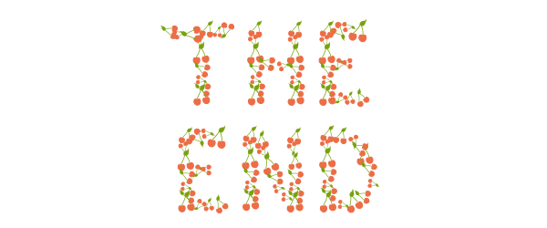

Introduction
There are a number of ways to include SVG in your projects: inline, an <img>, a background-image, an <object>, or as Data URI's. We will be specifically addressing
the use of SVG inline which involves writing SVG code within the body of a properly structured HTML document.
this is header3
Writing inline SVG enables very useful editing powers and lets us as the author have complete access to all the graphical elements individually. Within this code we are generating graphics that scale without losing image quality, are searchable, and enhance accessibility.
a header3 title
Writing inline SVG enables very useful editing powers and lets us as the author have complete access to all the graphical elements individually. Within this code we are generating graphics that scale without losing image quality, are searchable, and enhance accessibility.
Section 1
Writing inline SVG enables very useful editing powers and lets us as the author have complete access to all the graphical elements individually. Within this code we are generating graphics that scale without losing image quality, are searchable, and enhance accessibility.
Section 2
Writing inline SVG enables very useful editing powers and lets us as the author have complete access to all the graphical elements individually. Within this code we are generating graphics that scale without losing image quality, are searchable, and enhance accessibility.
Section 3
Writing inline SVG enables very useful editing powers and lets us as the author have complete access to all the graphical elements individually. Within this code we are generating graphics that scale without losing image quality, are searchable, and enhance accessibility.
Conclusion
Writing inline SVG enables very useful editing powers and lets us as the author have complete access to all the graphical elements individually. Within this code we are generating graphics that scale without losing image quality, are searchable, and enhance accessibility.
